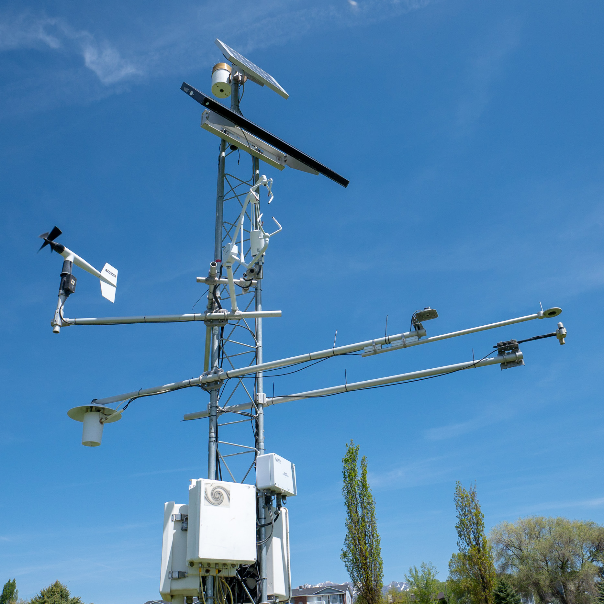

About Me
I am a graduate student working on my master’s degree in climate science at Utah State University working with Dr. Lawrence Hipps and Dr. Simon Wang. I spent 2012-2016 getting my undergraduate degree in meteorology at Iowa State University while also working as a student intern in the micrometeorology group at the National Lab for Ag and the Environment. Now I spend my days as a graduate research assistant, working with weather stations, debugging Python code, and trying to enjoy the outdoors as much as I can!
My research interests lie mostly within the interface between the earth’s surface and atmosphere. I have broad interests within that area, but I’m interested specifically in surface energy exchanges and how to best model and measure them in heterogeneous landscapes. Most of my research experience so far has been focused on flux measurements and using those in combination with remote sensing and models to better understand water use in both urban and agricultural landscapes. I have over five years experience using Python and other programming languages, which I use to process, vizualize, and interact with data.
I will be finishing up my master’s degree in spring 2019, and I am currently looking for PhD opportunities for fall 2019. If after looking through my website you think my research interests and skills are well-suited for your your group or lab, feel free to contact me.